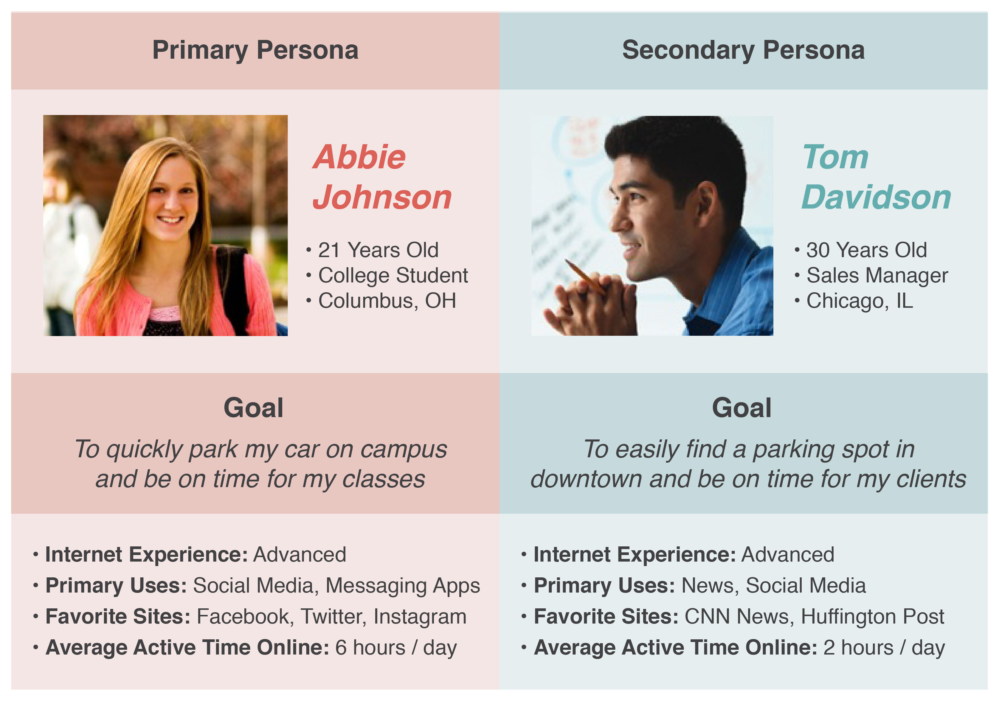
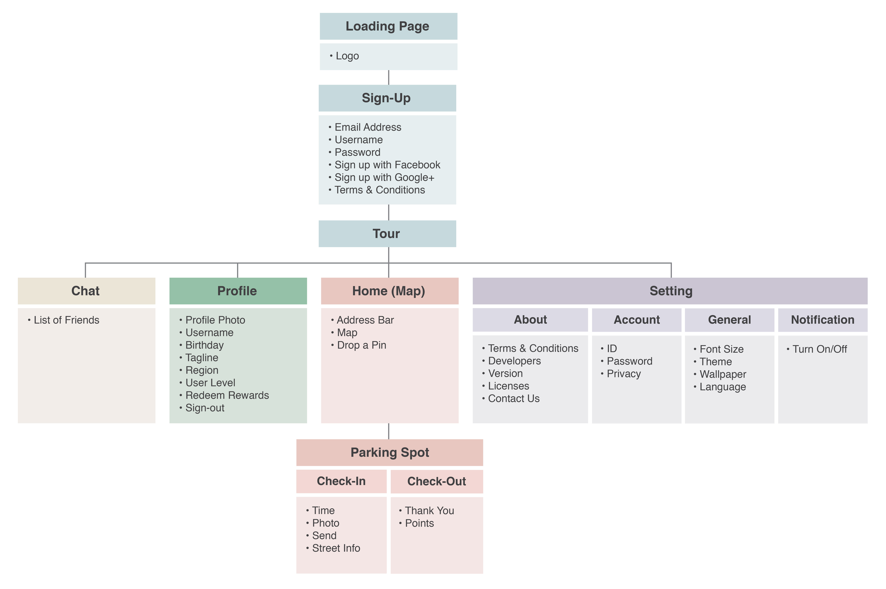
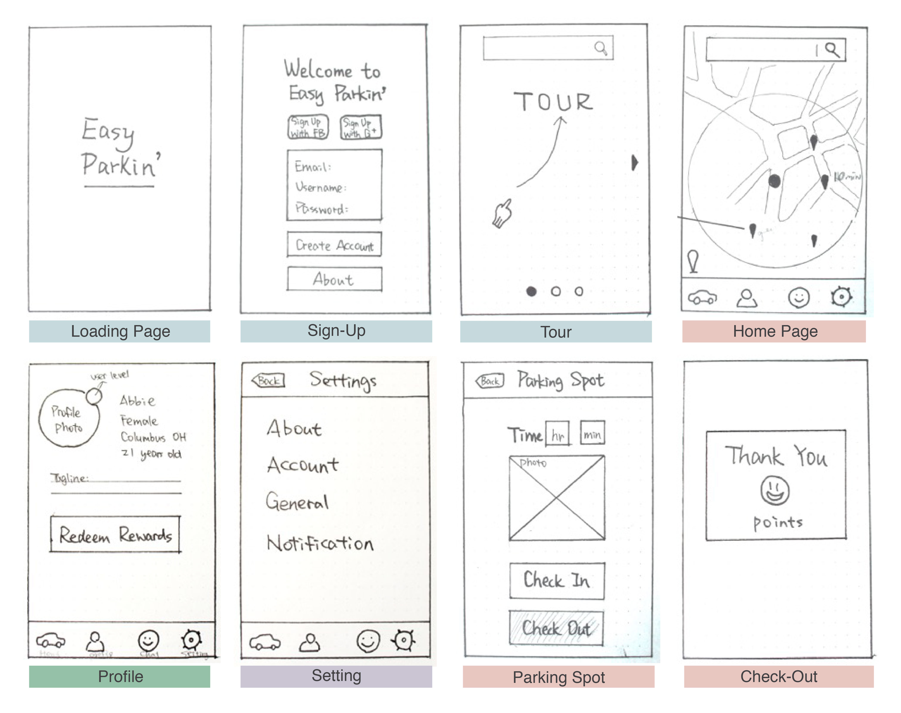
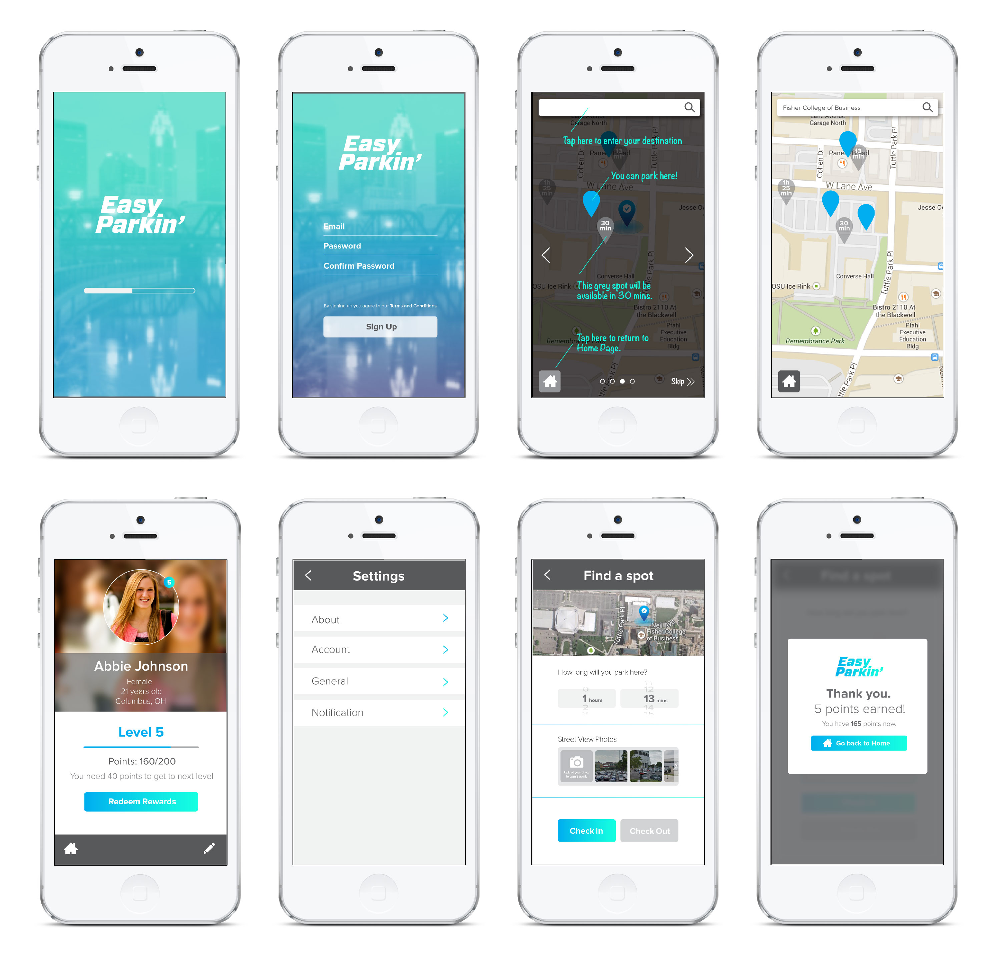
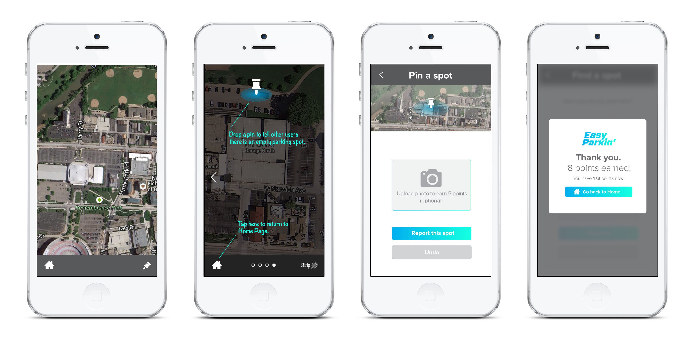

Overview
Easy Parkin’ is a prototypal mobile application that provides an easy and free solution for people to find an available parking spot. “Find a spot” and “Pin a spot” are two major features of this mobile app. Users are able to find available parking spots to park their cars by using the “Find a spot” feature, and they can also report an empty spot via the “Pin a spot” feature to help others. There is also a customer rewards system built in the app to motivate users to actively use the app and help the business grow.
Problem
I got my first car in college, and it was a life-changing event for me. I experienced the wonderful convenience
that I had never experienced before; however, at the same time, finding a parking spot to park my
car before my class starts was very stressful. I believed that many people face the same problem
with parking and feel the same pain, and I was motivated to come up with a solution to make people’s
life easier.
Facing the challenge: How to make parking on campus less stressful?
Research
I teamed up with two designers who were interested in my ideas and started our research on the topic. We conducted both primary research and secondary research to get a better understanding of user needs and explore the design requirements for final solution.
Survey & Interview
For the primary research, we surveyed 48 participants and interviewed 5 interviewees to gather both quantitative data and qualitative information to better understand users’ profiles, behaviors, needs, and challenges around parking. We found that:
- 88% of the survey participants struggle with parking often. 92% of them are college students who feel stressful to park on campus even with parking permits. 8% of them are young professionals who feel stressful to park in the downtown area.
- The survey participants and interviewees who struggle with parking often spend long time driving around the parking lot to look for an available parking spot.
- The survey participants and interviewees want to be able to better locate specific available parking spots and stop wasting time and gas driving around the parking lot.
Industrial Research
For the secondary research, we conducted an industrial research to discover and learn the existing technologies in the market that help people solving problems related to parking. We explored parking mobile apps and car rental companies, analyzed their popular features, and looked for the areas with potential opportunities. We found that:
- Mobile applications are the most widely used and feasible technology in the current industry.
- The existing parking mobile apps in the market can only help people locate parking lots rather than specific parking spots.
- The car rental companies like Car2go collaborating with universities can be an alternative way to alleviate the stress of on-campus parking, but it doesn’t directly solve the problem.
Results & Insights
Based on the findings from both primary research and secondary research, we concluded that:
- The design solution should be based on mobile platform to provide users with quick and easy access and great convenience.
- The main objective / function of the solution is to help people quickly find and locate available parking spots, freeing people from the stress of wasting time and gas driving around the parking lot to park their cars.
- There are great opportunities in the market and strong needs from people both inside and outside of school. The solution should not be limited to campus area; it could be first promoted in universities to help on-campus parking, growing its user base among young people who tend to adapt to new things quickly. Then, it could be spread out as a universal solution to help a broader audience.
Refined design question: Is there a way to use mobile technology to create a solution that helps people find an available parking spot?
Personas
Informed by the research findings, we created our primary and secondary personas: college student and young professional.
Iteration 1
Site Map
The name of the mobile app we created is Easy Parkin’. Different colors used in the site map represent features of the mobile app:
Wireframes
Prototype
User Testing & Results
We conducted one round of usability testing with 9 participants, consisting of 3 test sessions. All of the participants were full-time college students, ranging from 20 to 23 years old. They all owned a smartphone with advanced Internet experience. We found that:
- Participants felt confused about home page and main navigation.
- Participants had doubt about the built-in chat function. They preferred to use popular mobile messaging apps such as WhatsApp and Line.
- Participants wanted to be able to easily check their parking status.
Iteration 2
New Feature: Pin a Spot
Based on the user testing results, we started the second iteration process, incorporated some changes, and finalized our solution. Since the user testing participants expressed their strong preference for other mobile apps to chat and communicate, we decided to remove the built-in chat feature. In the meanwhile, we added a new feature “Pin a Spot” to better motivate people use the Easy Parkin’ app and reduce the technology cost to meet the cost-free design requirement we had. With the “Pin a Spot” feature, users are able to report available parking spots to help other users park their cars.
